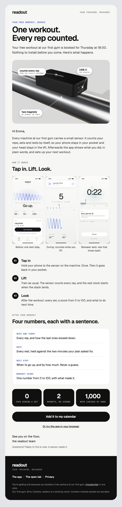
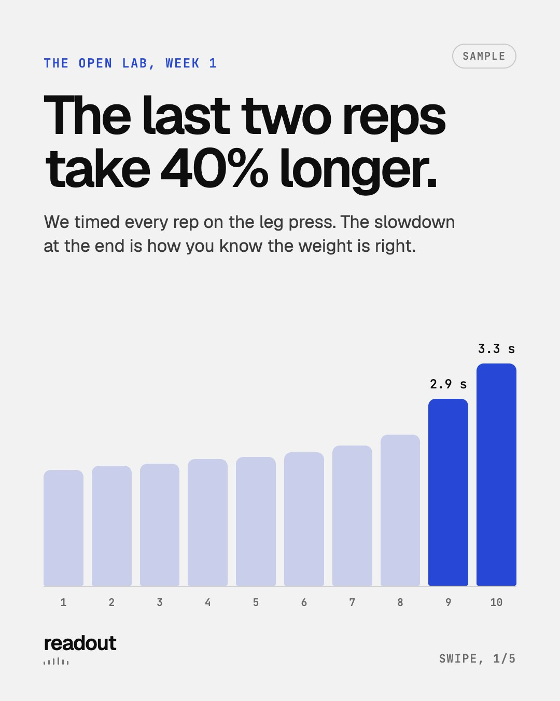
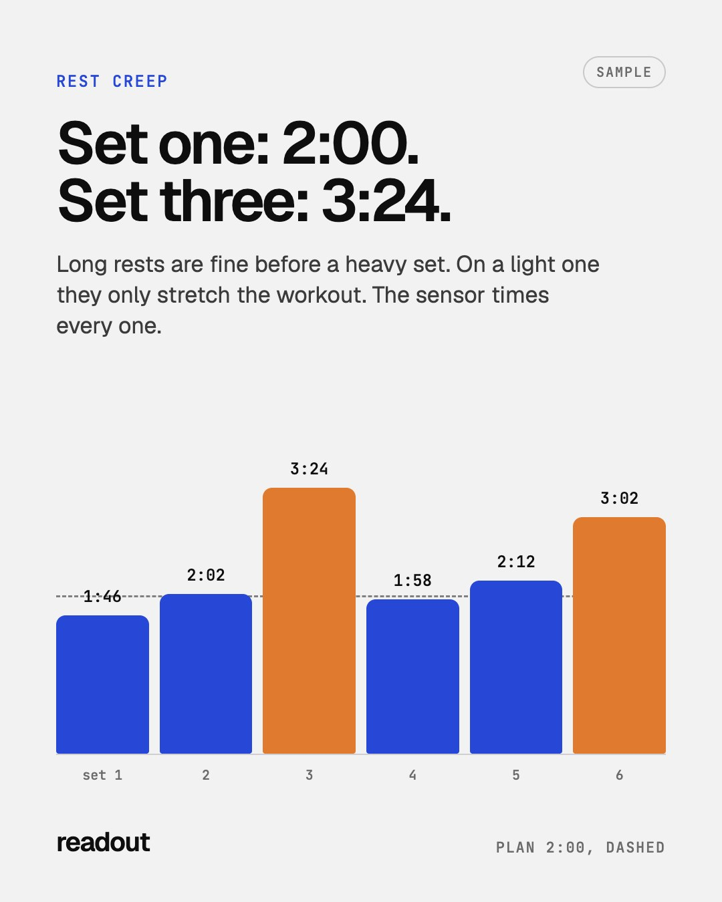
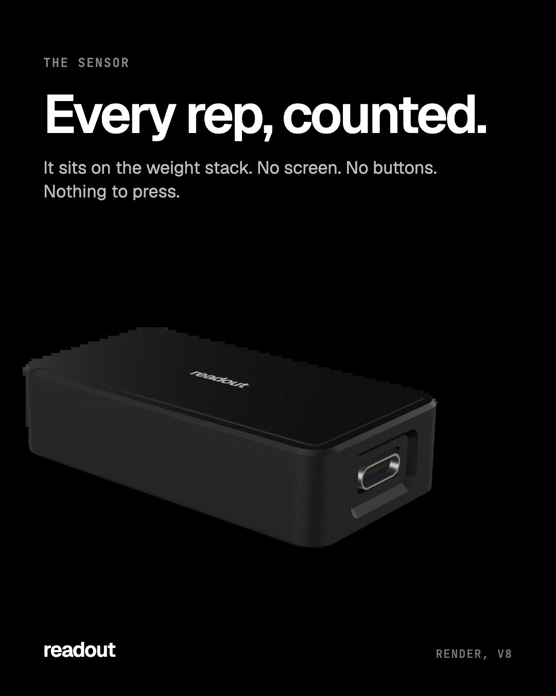
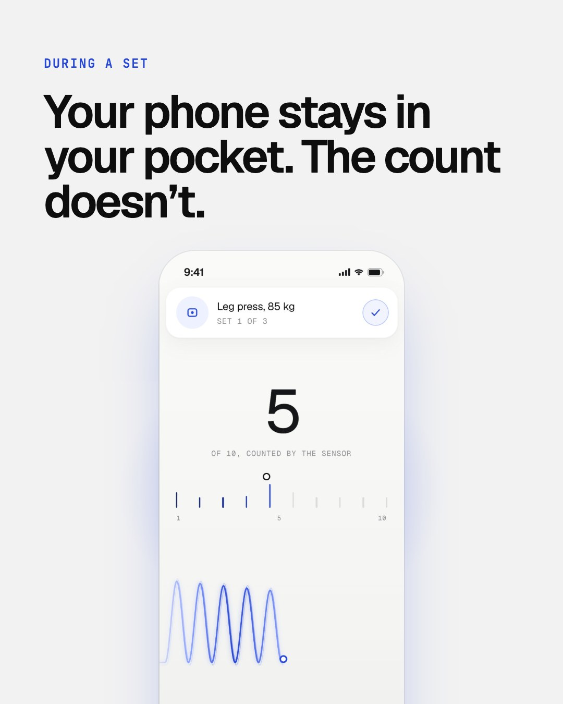
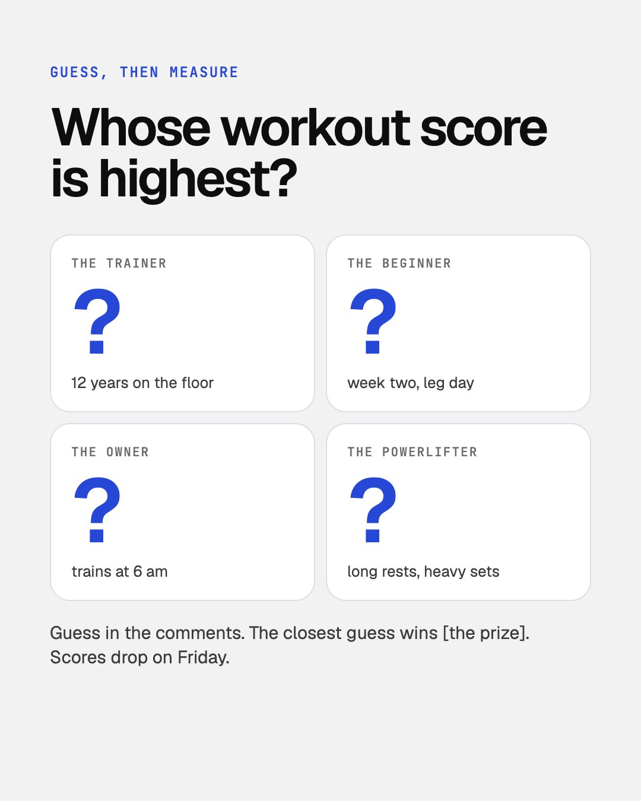
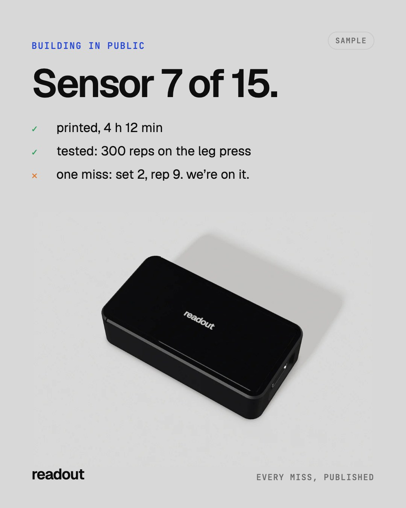
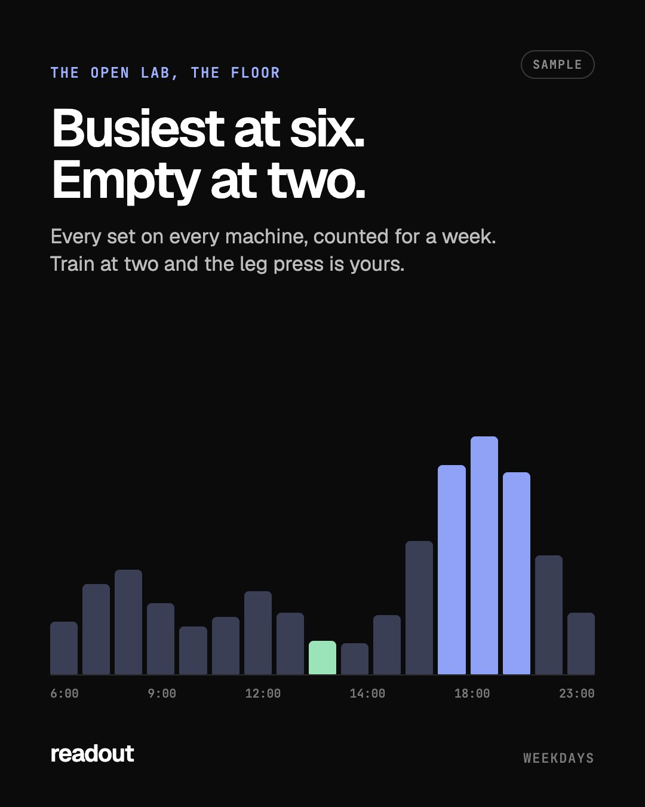
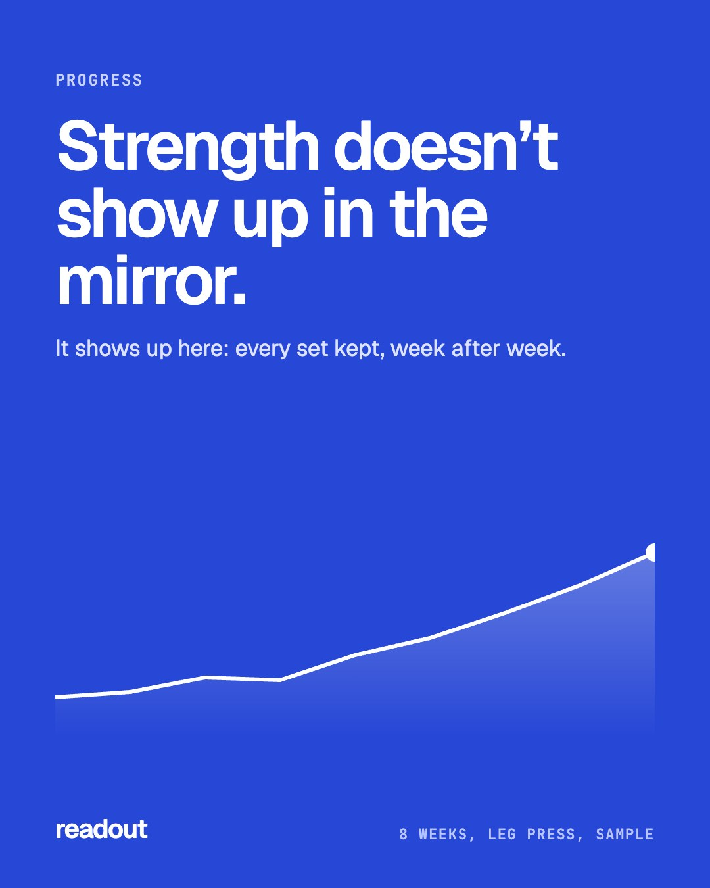

the sensor
the sensor
Direction 2: working name: readout
Your training, measured.
Measured on the machine. Explained in words anyone can read.
You train for months and still can’t say what’s working.
Watches measure your heart, not the machine. Apps make you type every set. So most training is never measured.
Readout puts a small sensor on each machine. It records every rep, set and rest on its own.
After each workout you get one score and one next step, in words anyone can read.
Working name: readout.com and the main domains are taken. Candidates, checked 18 Nov: proof of lift., show your sets., plain gains.
social strategy and posts
Social
Campaigns, the ideas behind the posts →LinkedIn, six posts ready →
From studying Ultrahuman’s Instagram: their reach comes from people (creators, members, live events) and from data stories with one clean chart. Their plain product posts get few likes. So readout posts the gym’s own numbers and its people, and saves the product shots for big moments. Designs are ours; photos and videos come from a real shoot.
The posts








Reels to shoot
12 s. Phone at 240 fps on a mini tripod at the weight stack, side light. The stack rises and falls once; the sensor’s blue line draws itself in sync; the counter ticks to 1. End card: Every rep, counted.
25 s. A trainer, a beginner, the owner and a powerlifter each guess their own workout score on camera. Comments guess too. Friday: the reveal reel, the closest comment wins.
10 s, split screen. Left: a thumb scrolling. Right: the app’s rest clock, 2:00, 2:41, 3:24. No voice. Caption: set three always takes longer.
45 to 60 s, every second week. Three members of our first gym, followed for the ninety days of the open lab, with their consent. Each episode ends on their strength line.
Photos to shoot
a member’s hand holding the phone to the sensor on the stack. 50 mm, side light, the pin in frame.
between sets, phone face down on the bench, the stack sharp, the person soft.
trainer and member reading the report together after the last set.
the floor at its busiest, wide and slow, faces blurred unless people agree.
the sensor on a steel stack, macro, black on metal. The one product shot.
The week
a data story carousel from the open lab
a reel: one rep, a first set, or the guess
the reveal, or building in public
stories: a poll, or the floor’s live count
the open lab report and a giveaway
keep the hours and formats with the most saves and shares